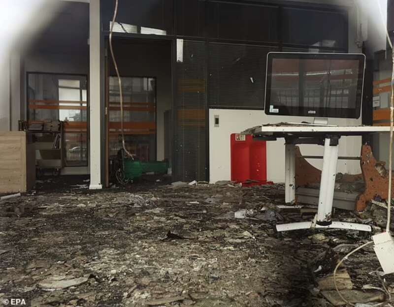

自从英国的南港市的3名女孩
在舞蹈工作室中被刺死的消息被广泛报道后
3名女童惨死，嫌犯为移民二代！
人们愈发关注这件事情
在社交媒体上，也涌现了不少谣言
这些谣言和假消息把矛头指向外来移民嫌犯
英国不少民粹团体借题发挥
开始抨击外来移民
7月30日在南港市的守夜活动
最后也演化成暴力犯罪
游行者打算“攻占”当地清真寺
维护秩序的40名警察也被打伤
👇点击学长往期文章，了解详情👇
英国南港发生暴乱！民粹正在撕裂英国！
然而这场“暴乱”并没有在南港市结束
而是在全英国蔓延开来
信源：Mail Online
昨日（8月3日）晚间
英国再次陷入“战火”
无耻的极右翼暴徒走上街头
焚烧建筑物、抢劫商店、袭击警察
信源：Mail Online
利物浦、赫尔、曼彻斯特、贝尔法斯特
特伦特河畔斯托克、诺丁汉
布里斯托和布莱克浦
陷入混乱
预计今晚可能还会有类似的活动
请大家务必小心
信源：Mail Online
抗议者试图踢倒警察的防暴装备
而其他示威者则向警察的盾牌投掷物品
信源：Mail Online
抢劫者趁混乱之际
他们从商店的货架上偷走手机、鞋子和葡萄酒
并用砖头和石头砸碎商店的窗户
他们这种行为是“毫无意义的破坏”
现场有人喊出民粹口号“这里是英格兰”

被烧毁的图书馆信源：Mail Online
被砸毁的警车
信源：Mail Online
被烧毁的汽车
信源：Mail Online
英国国家警察局长委员会表示
我们知道人们会试图再次这样做
警方已经并将继续做好准备
全国各地已增派了130个部队
部署近4,000名接受过公共秩序训练的警员
信源：Mail Online
尽管这些游行队伍中
肯定有一些人仅仅是为了纪念
3名失去生命的小女孩
但其中也不乏一些极右翼团体
他们在游行中煽风点火
引导舆论，挑起分化
当然
他们仅仅只代表英国的很小一部分群体
大多数英国人对外来移民都是友好的
学长建议大家近期尽量减少到闹市区
有游行示威的地方活动
因为游行针对的对象就是外来移民
很有可能被误伤